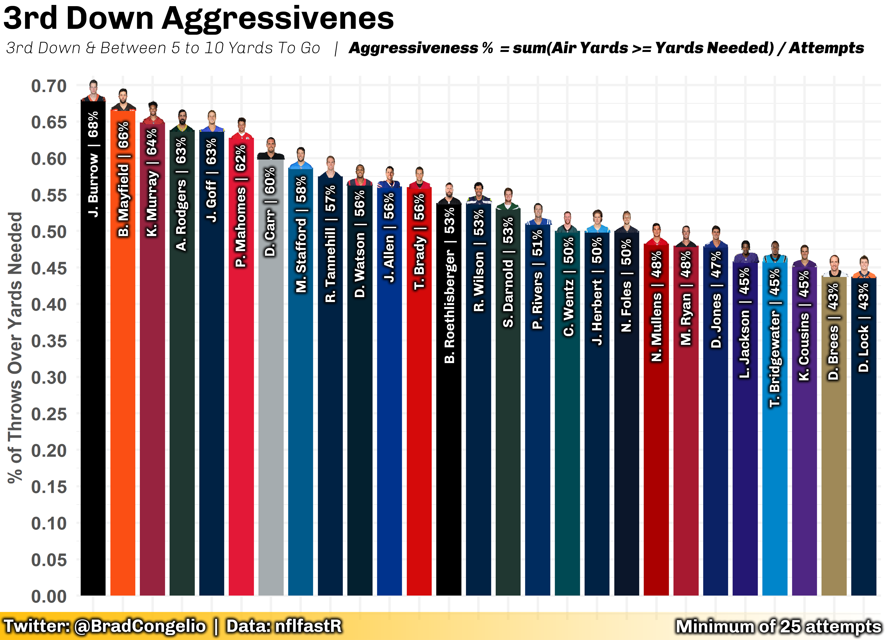
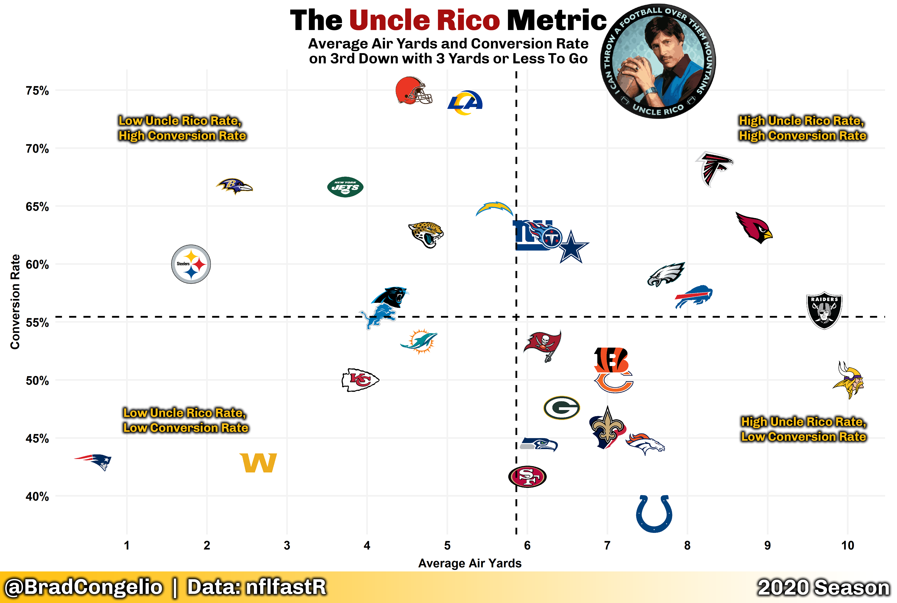

4 Data Visulization with NFL Analytics
An intro regarding the importance of data viz is going to go here.
Jim Stikeleather, writing for the Harvard Business Review, outlined three key elements that make a successful data visualization (albeit, leaving us to decide the definition of what a “successful” data visualization is). Despite that philosophical gap, the three elements provided by Stikeleather are succinct enough to allow us to build a framework in this chapter for how to successfully craft an NFL analytics data visualization. In his piece, Stikeleather outlines the following three characteristics of a successful data visualization: it understands the audience, it sets up a clear framework, and it tells a story (Stikeleather 2013).
To illustrate the importane of these three elements, let’s take a look at example visualizations using NFL data to furhter contextulize each one.
4.1 Data Viz Must Understand the Audience
As explained by Stikeleather, the core purpose of a data visualization is to take “great quantities of information” and then convey that information in such a way that it is “easily ssimilated by the consumers of the information.” In other words, the process of data visualization should allow for a great quantity of data to be distilled into an easily consumable (and understandable!) format.
Speaking specifically to NFL analytics, when doing visualizations we must be concious about whether or not the intended audience will understand the terminology and concepts we use in the plot. For example, most all NFL fans understand the “non-advanced” statistics in the sport. But, when plots start using metrics such as EPA or completion percentage over expected, for example, the audience looking at the plot may very well have little understanding of what is being conveyed.
Because of this, any data viz I create never shys away from including “directables” within the plot. These “directables” may be arrows that indicate which trend on the plot are “good” or they can be text within a scatterplot that explains what each quadrant means. Or, for example, I sometimes include a textual explanation of the “equation” used to develop a metric as seen below:
The above plot explores which QBs, from the 2020 season, were most aggressive on 3rd down with between 5 to 10 yards to go. Since “aggressiveness” is not a typical, day-to-day metric discussed by NFL fans, I included a “directable” within the subtitle of the plot that explained that the plot, first, was examining just 3rd down pass attempts within a specific yard range. And, second, I made the decision to include how “aggressiveness” was calculated by including the simple equation within the subtitle as well. Doing so allows even the most casual of NFL fans to easily understand what the plot is showing - in this case, that Joe Burrow’s 3rd down pass attempts with between 5 to 10 yards to go made it to the line of gain, or more, on 68% of his attempts. On the other hand, Drew Lock and Drew Brees were the least aggessive QBs in the line based on the same metric.
As another example, below is what I deemed my “Uncle Rico Metric” (because who does not like a good Napolean Dynamite reference?):

4.2 Setting Up for Data Viz
While most of your journey through NFL analytics in this book required you to use the tidyverse and a handful of other packages, the process of creating compelling and meaningful data visulizations will require you to utilize multitudes of other packages. Of course, the most important is ggplot2 which is already installed via the tidyverse. However, in order to recreate the visulizations included in this chapter, it is required that you install other R packages. To install the necessary packages, you can run the following code in RStudio: